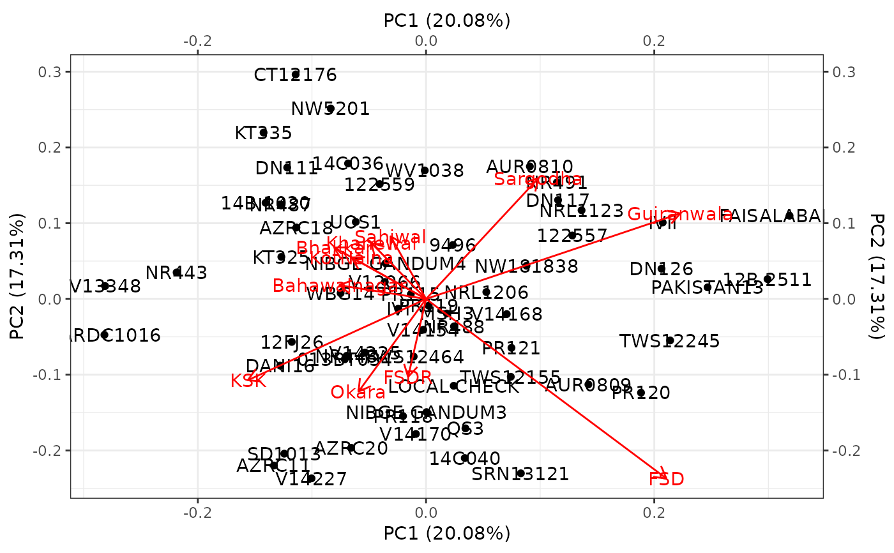
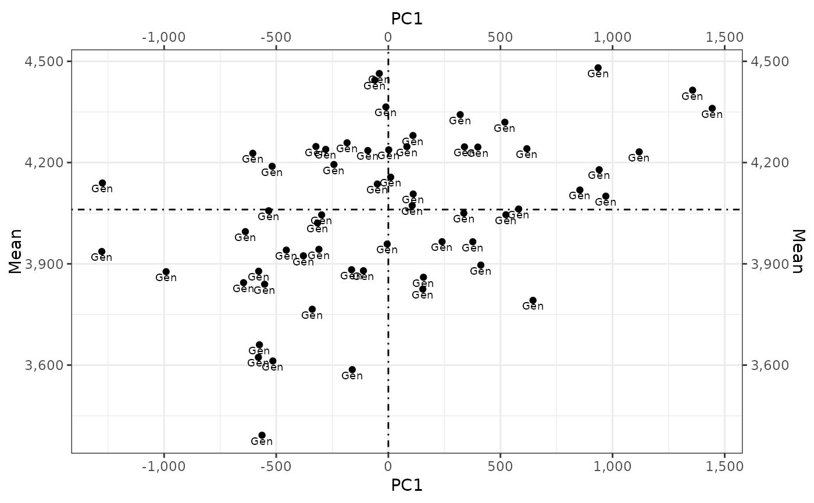

Additive Main Effects and Multiplicative Interaction (AMMI) Biplot
Source:R/ammi_biplot.R
ammi_biplot.RdPlots Additive Main Effects and Multiplicative Interaction (AMMI) for Genotypes by Environment Interaction (GEI)
Usage
ammi_biplot(.data, .y, .rep, .gen, .env)
# Default S3 method
ammi_biplot(.data, .y, .rep, .gen, .env)References
Singh, R. K. and Chaudhary, B. D. (2004) Biometrical Methods in Quantitative Genetic Analysis. New Delhi: Kalyani.
Author
Muhammad Yaseen (myaseen208@gmail.com)
Kent M. Edkridge (keskridge1@unl.edu)
Examples
data(ge_data)
ammi_biplot(
.data = ge_data
, .y = Yield
, .rep = Rep
, .gen = Gen
, .env = Env
)
#> $aami.biplot

#>
#> $MeanPC1Plot

#>